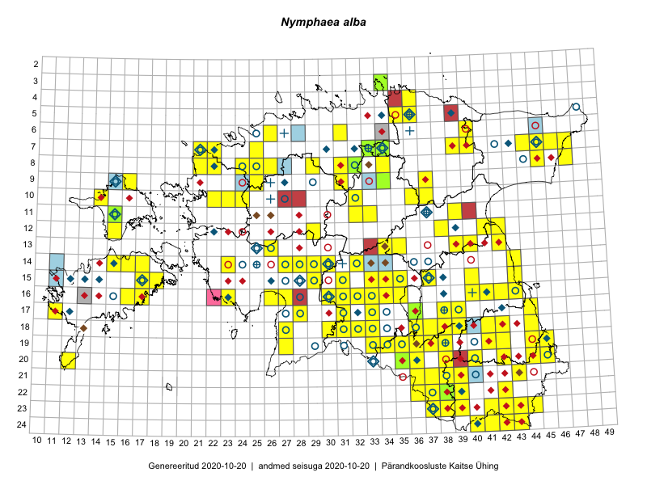

Nymphaea alba
Uuendatud: 2016-12-01
Kaardile koondatud taksonid: Nymphaea alba L.

Kaart põhineb 181 kirjel, neist vaatlusi 179 ja eksemplare 2.
Kuvatud viited 20 esimesele andmebaasikirjele, ülejäänud PlutoFis
- Tiit Hallikma, Indrek Tammekänd, Toomas Kukk: 2015-06-09: 12-29: ala
- Ott Luuk, Toivo Sepp: 2015-07-29: 09-31: ala
- Peedu Saar: 2015-07-04: 18-44: ala
- Ott Luuk, Peedu Saar: 2015-08-13: 24-43: ala
- Ott Luuk, Toivo Sepp: 2015-07-29: 09-31: GPS punkt
- Malle Leht: 2015-07-27: 18-40: ala
- Peedu Saar, Ott Luuk: 2015-08-12: 23-42: GPS punkt
- Peedu Saar, Ott Luuk: 2015-08-12: 23-42: ala
- Peedu Saar, Ott Luuk: 2015-08-13: 24-42: GPS punkt
- Peedu Saar, Ott Luuk: 2015-08-13: 24-42: ala
- Tiit Hallikma, Toomas Kukk: 2015-07-20: 07-44: GPS punkt
- Rein Kalamees, Kersti Püssa: 2015-07-16: 20-45: ala
- Tõnu Feldmann, Katrit Karus: 2015-07-31: 16-33: ala
- Katrit Karus, Tõnu Feldmann: 2015-07-30: 16-33: ala
- Tõnu Feldmann, Katrit Karus: 2015-07-31: 16-32: ala
- Tõnu Feldmann, Katrit Karus: 2015-07-31: 16-32: ala
- Ott Luuk, Hannes Pehlak: 2015-07-23: 07-40: ala
- Ott Luuk, Hannes Pehlak: 2015-07-22: 07-45: ala
- Katrit Karus, Tõnu Feldmann: 2015-08-03: 14-32: ala
- Katrit Karus, Tõnu Feldmann: 2015-07-29: 13-42: ala